Seed (English)
Seed
(Mandarin / Cantonese)
You can make this !
1. Hawberry (Hawthorn berry)
山楂 shānzhā /
山楂 saan1 zaa1
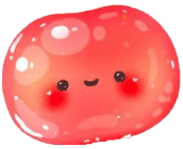
糖葫芦 tánghúlu /
糖葫蘆 tong4 wu4 lou5- a sweet, crunchy winter snack from northern China!
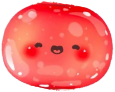
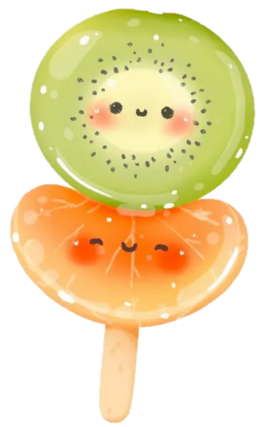
2. Kiwi (Chinese gooseberry)
猕猴桃 míhóutáo /
奇異果 kei4 ji6 gwo2
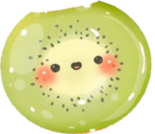
糖葫芦 tánghúlu /
糖葫蘆 tong4 wu4 lou5
- a sweet, crunchy winter snack from northern China!
3. Mandarin orange
橘子 júzi /
柑 gam1
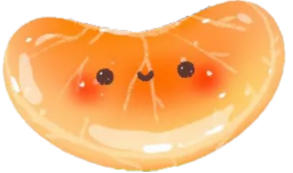
糖葫芦 tánghúlu /
糖葫蘆 tong4 wu4 lou5
- a sweet, crunchy winter snack from northern China!
4. Corn
玉米 yùmǐ /
粟米 suk1mai5
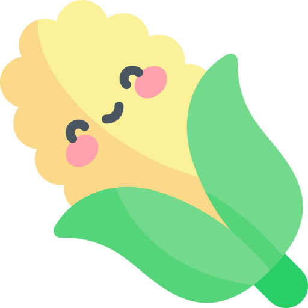
commonly grown in northern China -
corn-on-the-cob is enjoyed steaming hot as a popular street snack in China !
5. Rice
米饭 mǐfàn /
飯 faan6
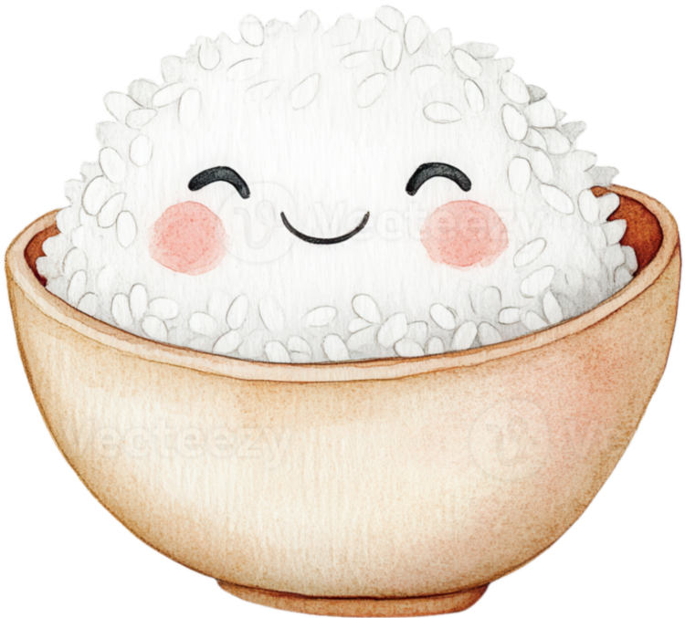
main staple in southern China -
粽子 zòngzi is a steamed sticky rice dumpling wrapped in bamboo leaves !

6. Black sesame
+ Red bean
= Brown MUD
黑芝麻 hēizhīma /
黑芝麻 hak1 zi1 maa4
+ 红豆 hóngdòu
/ 紅豆 hung4 dau2
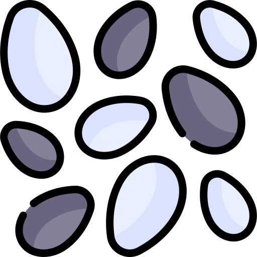
+
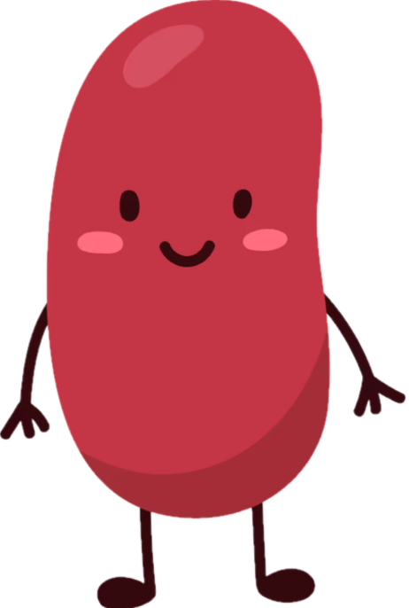
=
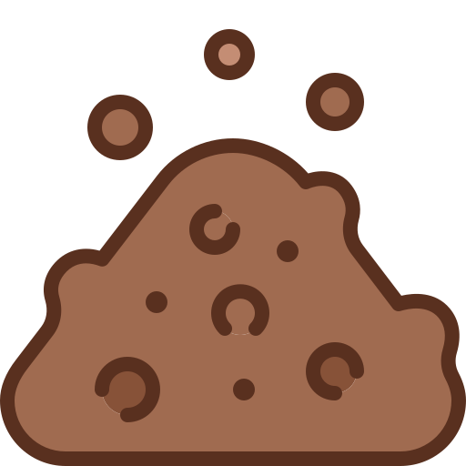
泥巴派 Níbā pài /
泥派 nai4 paai3
(MUD PIE) oink
- one cup of black sesame beverage contains more calcium than one cup of cow's milk !
7. Osmanthus flower
桂花 guìhuā /
桂花 gwai3 faa1
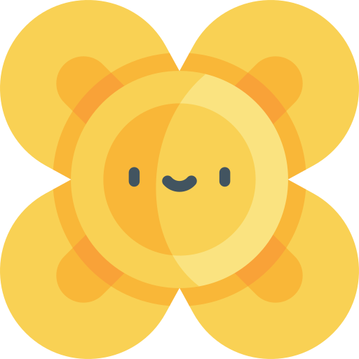
桂花糕 guìhuāgāo /
桂花糕 gwai3 faa1 gou1
(osmanthus cake)
- a revered flower from southwestern China with a sweet aroma, cultivated for over 2,500 years !
8. ？ 。。。many more

 Futian High-Speed Railway Station
Futian High-Speed Railway Station 大福
大福